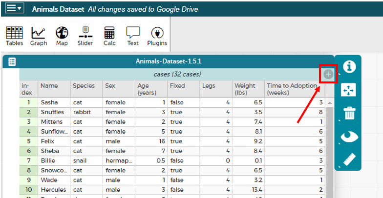
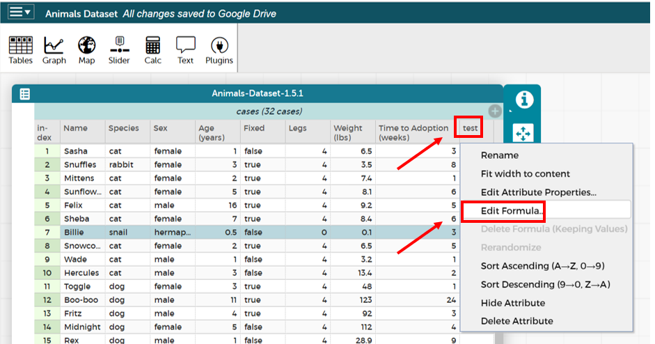
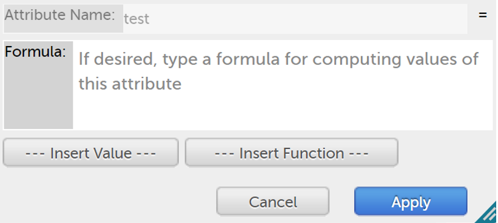

Exploring CODAP
Students begin to program, explorings how Numbers, Strings, Booleans and operations on those data types work in CODAP.
|
Lesson Goals |
Students will be able to…
|
|
Student-facing Lesson Goals |
|
|
Materials |
|
|
Key Points For The Facilitator |
|
error message-
information from the computer about errors in code
syntax error-
errors where the computer cannot make sense of the code (e.g. - missing commas, missing parentheses, unclosed strings)
| Numbers & Strings | 20 minutes |
Overview
Students experiment with CODAP. They explore Number and String data types, and investigate how these data types behave in CODAP.
Launch
🖼Show image When programming in this class, you’ll be working together using the Driver/Navigator model. Each group can only have one "Driver" - their hands are on the keyboard, and their job is to manage the typing, clicking, shortcuts, etc. If you’re not a Driver, you’re a "Navigator" - your job is to tell the Driver where to go, what to type, etc. A good Driver types only what the Navigator tells them to, and a good Navigator makes sure to give clear and precise instructions.
{kind=link}
The Driver/Navigator Model This model of pair programming is extremely useful for teasing apart the "thinking" step from the "typing" one. Students - especially those who are new to text-based programming or typing itself - can struggle to put their thoughts into the programming environment. This model allows them to focus on communicating their ideas, but letting the Driver focus on the coding. Likewise, the Driver has a chance to focus on syntax and programming. Finally, the requirement that ideas are translated through another person’s hands is an excellent scaffold for getting students talking about their thinking and about code. |
-
Open the Animals Starter File in CODAP.
-
Play around in our new platform! Record your observations on CODAP Exploration.
-
What did you Notice? What do you Wonder?
Debrief with students, then ensure that they all have created a blank column titled test. They can do so by selecting the grey plus sign (+) in the upper right-hand corner of the Animals Table. Note: the plus sign will not appear unless a table or table row is selected.

{kind=link}
Investigate
In their test column, students will experiment with Numbers and Strings. In order to complete the worksheet below, students must click on the test cell in the header of their Table, and then choose Edit formula from the resulting drop-down menu.

{kind=link}
As they complete each directive, they will re-open Edit Formula (below), delete their previous entry and then input the next entry.

{kind=link}
-
Complete Numbers and Strings.
-
What did you Notice? What do you Wonder?
-
The Synthesize section (below) outlines several of CODAP’s features that students likely observed.
-
-
Did you get any error messages? What did you learn from them?
-
Most of the error messages we’ve just seen were drawing our attention to syntax errors: Missing commas, unclosed strings, etc.
-
Synthesize
CODAP knows about many kinds of Numbers (like Integers, Reals, etc), and they behave pretty much the way they do in math. Discuss what students have learned:
-
Numbers and Strings evaluate to themselves.
-
CODAP converts fractions into decimals automatically.
-
Anything in quotes is a String, with one exception: CODAP will convert strings containing only numbers (e.g. “42” but not “42 hello”) into number values.
-
Strings must have quotation marks on both sides.
-
Operators work just like they do in math - with a few exceptions. The
+, for instance, will join together two strings, or a number and a string. -
CODAP knows the order of operations.
-
Types matter! We can subtract one number from another, but we can’t subtract the Number
4from the String"hello".
Error messages are a way for CODAP to explain what went wrong, and are a helpful way of finding mistakes. Emphasize how useful they can be, and why students should read those messages out loud before asking for help.
| Booleans | 20 minutes |
Overview
This lesson introduces students to Booleans, a unique data type with only two values: "true" and "false", and why they are useful in both the real world and the programming environment.
Launch
What’s the answer: is 3 greater than 10?
Boolean-producing expressions are yes-or-no questions and will always evaluate to either true (“yes”) or false (“no”). The ability to separate inputs into two categories is unique and quite useful!
For example:
-
Some rollercoasters with loops require passengers to be a minimum height to make sure that riders are safely held in place by the one-size-fits all harnesses. The gate keeper doesn’t care exactly how tall you are, they just check whether you are as tall as the mark on the pole. If you are tall enough, you can ride, but they don’t let people on the ride who are shorter than the mark because they can’t keep them safe.
-
When you log into your email, the computer asks for your password and checks whether it matches what’s on file. If the match is
trueit takes you to your messages, but, if what you enter doesn’t match, you get an error message instead.
Brainstorm other scenarios where Booleans are useful in and out of the programming environment.
Investigate
In pairs, complete Booleans, making predictions about what a variety of Boolean expressions will return and testing them in the editor.
Synthesize
What sets Booleans apart from other data types?
| Expressions and Functions | 10 minutes |
Overview
Students play with expressions in CODAP, reinforcing concepts from standard Algebra.
Launch
Students know about Numbers, Strings, Booleans and Operators — all of which behave just like they do in math. But what about expressions? Students may remember expressions from algebra: x + 1.
-
Turn to Expressions & Functions in CODAP.
-
Let’s complete the first table together, with pencil and paper.
-
You complete the second table on your own.
Now, explain to students that, by using CODAP, they can evaluate expressions much more quickly and efficiently than they might with pencil and paper. Rather than evaluating each expression in their heads, they will provide CODAP with a formula so that CODAP can do the math!
-
With your partner, open the Animals Starter File and use it to finish the questions 1 and 2 on Expressions & Functions in CODAP.
-
Note that attribute names that are more than one word need to be entered inside of tick marks.
Investigate
CODAP also allows us to insert functions into the formula box! Arguments (or "inputs") are the values passed into the function. CODAP has lots of built-in functions that we can use to play with our dataset.
-
With your partner, complete Expressions & Functions in CODAP.
-
What did you learn about the two functions
sqrtandstringLength?
Synthesize
Debrief the activity with the class.
-
Think about the new columns you created. How did the inputs relate to the outputs?
-
Did you encounter any new functions that intrigued you?
-
What kind of error messages did you encounter, if any?
These materials were developed partly through support of the National Science Foundation,
(awards 1042210, 1535276, 1648684, and 1738598).  Bootstrap by the Bootstrap Community is licensed under a Creative Commons 4.0 Unported License. This license does not grant permission to run training or professional development. Offering training or professional development with materials substantially derived from Bootstrap must be approved in writing by a Bootstrap Director. Permissions beyond the scope of this license, such as to run training, may be available by contacting contact@BootstrapWorld.org.
Bootstrap by the Bootstrap Community is licensed under a Creative Commons 4.0 Unported License. This license does not grant permission to run training or professional development. Offering training or professional development with materials substantially derived from Bootstrap must be approved in writing by a Bootstrap Director. Permissions beyond the scope of this license, such as to run training, may be available by contacting contact@BootstrapWorld.org.